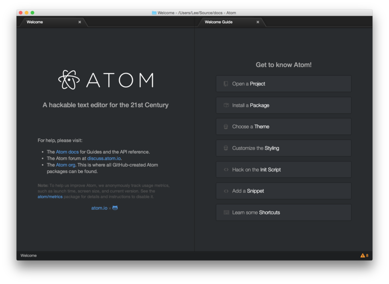
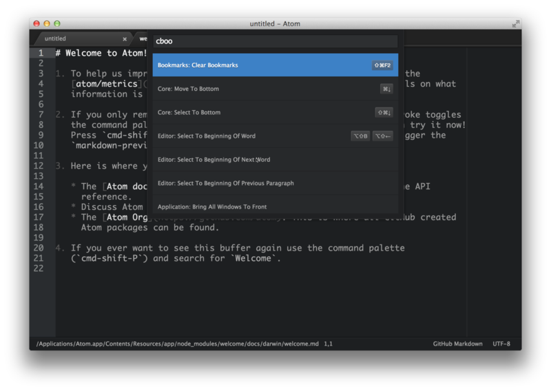
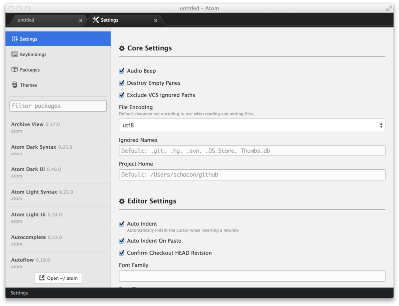
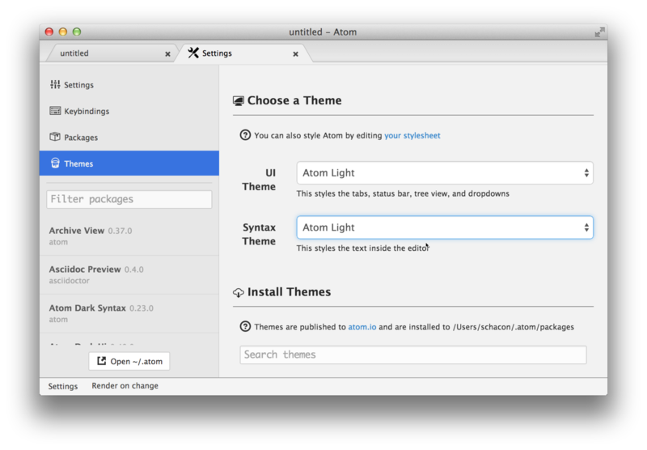
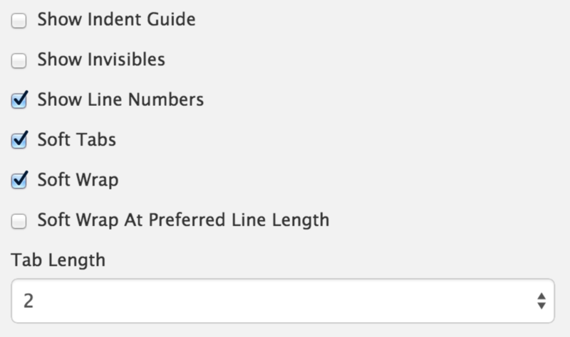
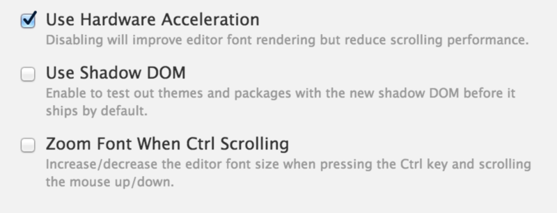
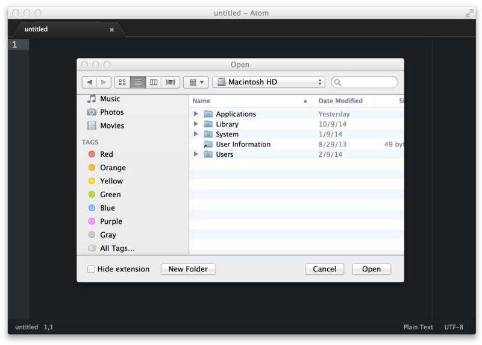
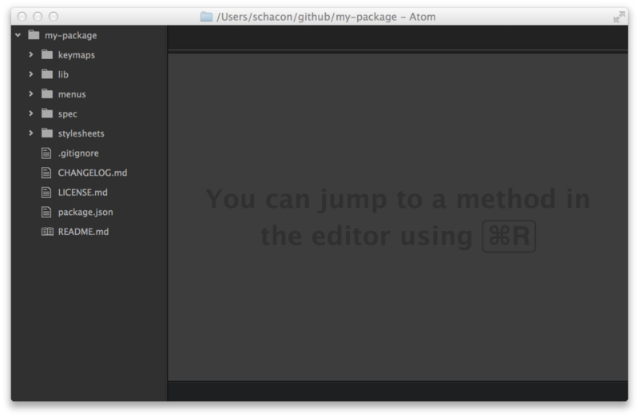
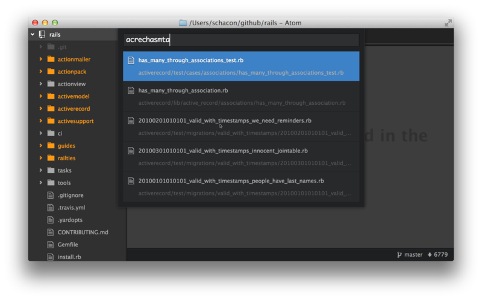

Atom基础¶
既然Atom在你的系统中已经安装了，让我们启动、配置并且熟悉这一编辑器吧。
当你首次启动Atom时，你会看到这样一个界面：

这是Atom的欢迎界面，它会给你一些很好的建议，关于如何开始使用这个编辑器。
基本的术语¶
首先，让我们熟悉一些在这篇文档中使用的基本的术语。
缓冲区
缓冲区是Atom中一个文件的文本内容。在大多数描述中，它基本类似于文件，但是它是Atom在内存中存放的版本。例如你可以修改文本缓冲区的内容，但是如果你不保存文件，它就不会写到相关的文件中。
面板（pane）
面板是Atom中可见的部分。如果你去看我们刚才加载的欢迎界面，会看到四个面板 —— 标签栏（tab bar），行号栏（gutter，行号在里面），底部的状态栏（status bar），最后是文本编辑器。
命令面板（Palette）¶
在欢迎界面中，我们介绍了Atom中最重要的命令，“命令面板”。如果在编辑器获得焦点时，按下cmd-shift-P，就会弹出命令面板。
在整个教程中我们使用类似cmd-shift-P的快捷键来演示如何执行命令。这些是Atom在Mac上的默认快捷键。它们有时候会有些差异，取决于你的平台。
你可以使用命令面板来查找正确的快捷键，如果它由于一些原因没有生效。
这一搜索驱动的菜单可以执行Atom中几乎任何主要的工作。你可以按下cmd-shift-P来搜索命令，而不是在应用的菜单上点来点去来寻找东西。

你不仅仅可以在上千种命令中快速查看和查找，也可以查看一个命令上是否有关联的快捷键。这是非常不错的，因为它意味着你能够以自己的方式做一些有趣的事情，并且同时记住使用它的快捷键。
在这篇教程的剩余部分，我们尝试简单讲述一下你可以在命令面板搜索到的各种文本，除了不同命令的快捷键。
设置和偏好¶
在设置界面中，Atom提供了许多你可以修改的设置和偏好。

这包括调整配色和主题、指定如何处理换行、字体设置、tab宽度、滚动速度、和一些其它的设置。你也可以使用这个界面来安装新的主题和包，这会在“Atom中的包”一章提到。
你可以通过菜单栏中，“Atom”菜单底下的“Preferences”菜单项，来打开这个设置界面。你也可以在命令面板中搜索settings-view:open命令，或者按下cmd-,快捷键。
修改颜色主题¶
设置视图也允许你为Atom修改颜色主题。Atom自带4种不同的UI颜色主题，亮色或者暗色调的Atom和One主题。同时也拥有八种不同的语法颜色主题。你可以通过点击设置视图边栏上的“Themes”菜单，修改当前的主题，或者安装新的主题。

UI主题会修改UI元素的颜色，例如标签页和树视图，而语法主题会修改你加载进编辑器的文本的语法高亮。简单地在下拉列表中选择一个不同的项来修改主题。
软换行（Soft Wrap）¶
你可以在设置视图中指定空白字符和软换行的偏好。

开启“Soft Tabs”（软tab字符）会在你按下tab键的时候插入空格来替代真正的tab字符。“Tab Length”指定了要插入多少个空格，或者“Soft Tabs”禁用时tab字符用多少个空格来表示。
“Soft Wrap”（软换行）选项会在一行的长度超出编辑器宽度的时候将其换行。如果这一项被禁用，那一行会超出编辑器的边框，你只能通过滚动窗口来查看剩下的内容。如果“Soft Wrap At Preferred Line Length”被选中，一行会在超过80个字符的地方换行，而不是编辑器的宽度。你也可以把一行默认的长度修改成不是80的别的值。
在“基本的自定义”一章中，我们将会看到如何为不同的文件类型指定不同的换行偏好（例如你想在Markdown文件中自动换行，但是代码文件中不这样）。
Beta功能¶
由于Atom已经开发完成了，所以有时有一些新的功能在发布给每个人之前会被测试。在一些情况中，这些变更默认是关闭的，但是可以在设置视图中打开，如果你想要尝试它们的话。

包的开发者为了确认他们的包仍旧在新的功能下生效，会在它们发布给大多数用户之前接触这些特性或者变更，这主要对他们比较有用。然而，如果你对这些新的特性比较感兴趣，偶尔尝试它们中的一些也是十分有趣的。
打开、修改和保存文件¶
既然你的编辑器看起来并且表现出你想要的样子，让我们来打开并编辑文件。毕竟这是一个文本编辑器，对不对？
打开文件¶
在Atom中打开文件有许多种方法，你可以在菜单栏选择“File >> Open”，或者按下cmd-O来从系统对话框中选择一个文件。

这对于打开不在你当前项目（接下来会讲到）中的文件，或者由于一些原因你想打开一个新的窗口，是十分有用的。
在Atom中打开文件的另一种方式，是在命令行中使用atom命令。如果你使用Mac，Atom的菜单栏有个命令叫做“Install Shell Commands”，它会安装atom和apm命令，如果Atom自己不能安装它们的话。在Windows或者Linux上面，这两个命令作为Atom安装进程的一部分自动安装。
你可以使用atom带着一个或者多个文件目录来在Atom打开这些文件。
$ atom -h
Atom Editor v0.152.0
Usage: atom [options] [path ...]
One or more paths to files or folders may be specified. If there is an
existing Atom window that contains all of the given folders, the paths
will be opened in that window. Otherwise, they will be opened in a new
window.
...如果你熟悉控制台或者使用它完成很多工作，这是相当好用的工具。只是执行atom [files]命令，你就可以开始编辑了。
编辑和保存文件¶
编辑文件很直接，你可以使用鼠标点击和滚动，以及打字来修改内容。Atom中没有特殊的编辑模式或者快捷键。
你可以从菜单栏选择“File >> Save”，或者cmd-s快捷键来保存文件。如果你选择了“Save As”，或者按下了cmd-shift-s快捷键，就可以将当前编辑器中的内容保存到一个不同的文件名下面。最后，你可以按下cmd-alt-s来保存你在编辑器中打开的所有文件。
打开目录¶
Atom并不只能够处理单个文件，你可能大多数时间都花在处理多个文件的项目。从菜单栏选择“File >> Open”，并且从对话框中选择一个目录来打开目录。你也可以从菜单栏选择“File >> Add Project Folder…”，或者按下cmd-shift-O快捷键，在你当前的Atom窗口中添加不止一个目录。
你可以在命令行中打开任意数量的目录，通过向atom命令传递它们的路径。例如你可以运行atom ./hopes ./dreams命令，来同时打开hopes和dreams目录。
当你在Atom中打开一个或者多个目录时，Atom会自动在窗口的一边显示树视图。

树视图允许你浏览和修改文件以及你项目的目录结构。你可以从这个视图中打开、重命名、删除和创建新的文件。
你也可以使用cmd-\或者命令面板的tree-view:toggle命令来隐藏和显示它。以及ctrl-0来在它上面设置焦点。当树视图具有焦点时，你可以按下a、m、d来添加、修改和删除文件和文件夹。你可以在树视图中简单地右键点击文件和文件夹，来查看许多不同的选项，包括在你的本地文件系统中展示文件，或者复制文件路径到你的剪贴板。
Atom 模块¶
像许多Atom的部分一样，树视图并不直接构建在编辑器内，而是Atom默认自带的独立的包中。
你可以在这里找到树视图的代码。
这是Atom的有趣的事情之一。许多核心功能实际上只是包，它们和你实现一些其它功能的方式相同。这意味着例如你不喜欢树视图，你可以非常简单地编写你自己对于该功能的实现，并且完全替换它。
在项目中打开文件¶
你在Atom中打开一个项目之后，你可以轻松地找到并且打开项目中的文件。
如果你按下cmd-T或者cmd-P，模糊查找工具的对话框就会弹出。这样能够让你通过输入路径的一部分，在项目中的任何目录中寻找任何文件。

你也可以使用cmd-B只在当前打开的文件中搜索（而不是项目中的每个文件）。这样的搜索只在“缓冲区”或者打开的文件中进行。你也可以使用cmd-shift-B来限制模糊查找工具，只在上次Git提交以来添加和修改的文件中搜索。
模糊查找工具同时使用core.ignoredNames和fuzzy-finder.ignoredNames设置，来过滤不显示的文件和文件夹。如果你的项目中有大量你不想在其中搜索的文件，你可以向这两个设置之一添加通配符或者目录。我们将会在“全局设置”中了解设置的更多细节，但是现在你可以在设置视图的核心设置下面简单地设置它。
这两个设置会解释为Unix通配符，在minimatch Node.js库中实现。
你可以在这里阅读更多关于minimatch的细节。
当core.excludeVcsIgnoredPaths开启的时候，并不会展示Git忽略的文件。你可以在设置视图中切换它，它是顶级选项之一。